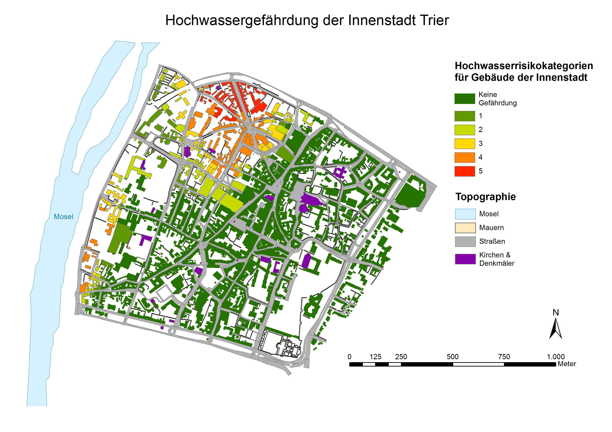

Kartographische Darstellung von Hochwasserexpositionen am 3D-Stadtmodell
Basierend auf einem digitalen Geländemodell (DGM) und einem Polygondatensatz der Gebäude wurden verschiedenen Methoden zur Darstellung des Hochwasserrisikos in der Innenstadt von Trier getestet und miteinander verglichen.
Erstellung einer Hochwasserrisikokarte in ArcMap
- Datenaufbereitung - Korrektur von unnatürlichen Senken
Im ersten Schritt wurden unnatürliche Senken, welche häufig in digitalen Geländemodellen durch Messfehler auftreten, korregiert. Mit Hilfe des Werkzeuges "Flow direction" angewendet auf das DGM wird zunächst für jede Rasterzelle des Geländemodells die Fließrichtung ermittelt. Anschließend wurden mit dem Werkzeug "Sink" (Z-Wert = 136) die nicht natürlichen Senken identifiziert und anschließend mit dem Werkzeug "Fill" aufgefüllt. - Berechnung der einzelnen Pegelstände
Ausgehend von einem Pegelnullpunkt von 121 Metern und einem mittleren Wasserstand von 3 Metern wurden in Schritten von 0,5 Metern die einzelnen Pegelstände bis zu einer Höhe von 133 Metern berechnet und als Raster-Dataset gespeichert (Abb.3). Die Berechnung erfolgt durch den Rastercalculator in ArcMap.
Abb.3: Screenshot aus ArcMap - Pegelstände der Mosel in der Innenstadt Trier
- Umwandlung der Rasterdatensätze in Shapefiles
Mit Hilfe des Werkzeuges "Raster to Polygon" lassen sich die erstellten Raster-Datensätze in Shapefiles umwandeln. Aufgrund der großen Anzahl an Datensätzen erwies es sich als geschickt, diesen Arbeitsschritt als Batch-Verarbeitung auszuführen.
- Berechnung der Gefährdung einzelner Gebäude
Durch das Verschneiden der Gebäude mit den einzelnen Pegelständen der Mosel können die vom Hochwasser betroffenen Gebäude identifiziert werden (Abb.4). In Abhängigkeit vom Pegelstand wurden 6 Gefährdungskategorien erstellt von keine (0) über niedrig (1) bis hohe Gefährdung (5).
Abb.4: Karte zur Hochwassergefährdung der Gebäude in der Innenstadt Trier
- Quantitative Analyse des Hochwasserrisikos
Aus der Grundfläche (GF) , der Stockwerkszahl (SWZ) und der Nutzungsart eines jeden Gebäudes wurde zudem ermittelt, wie viele Einwohner vom Hochwasser betroffen sind (Tab.1). Dabei wurde pro Einwohner von einer druchschnittlichen Wohnfläche von 53 qm^2 (WFpE) ausgegangen. Bei Geäuden mit Mischnutzung wurde die SWZ um 1 reduziert. Die Zahlen wurden mit Hilfe der Attributtabelle und der Statistikabfrage in ArcMap ermittelt und in Excel zusammengefasst.
Formel zur Berechnung: Betroffene Einwohner = ( (GF * SWZ) / 2) / WFpE

Tab.1: Quantitative Hochwasseranalyse Innenstadt Trier
Interaktive Hochwasserrisikokarte in Google Earth
Für eine interaktive Visualisierung der betroffenen Gebiete und Gebäude wurden die Daten in ArcMap in das Google Earth eigene KMZ-Format konvertiert. Diese können unter den folgenden Links heruntergeladen oder direkt in GoogleEarth geöffnet werden (Abb.5).

Abb.5: Screenshot aus GoogleEarth - Hochwassergefahr Innenstadt Trier
Erstellung einer Hochwasseranimation mit ArcScene
Aus den berechneten Pegelständen wurde anschließend eine Animation des steigenden Wasserpegels der Mosel in ArcScene erstellt (Abb.6). Hierbei wurden zunächst die Shapefiles der einzelnen Pegelstände und der topographischen Elemente der Innenstadt in ArcScene importiert. Da sich diese auf unterschiedliche Höhen beziehen, mussten die einzelnen Layer über die Einstellung der Basishöhen zunächst aufeinander abgestimmt werden. Anschließend wurde mit dem Setzen von Keyframes eine Animation erstellt, in der nacheinander die Shapefiles der verschiedenen Pegelstände eingeblendet werden, sodass der Eindruck eines steigenden Hochwasserpegels entsteht.
Abb.6: Hochwasseranimation der Trierer Innenstadt erstellt mit ArcScene
Bedeutung in der Geovisualisierung
Die Beispiele oben stellen verschiedene Wege dar, räumliche Prozesse und Zusammenhänge kartographisch zu veranschaulichen. Die Darstellung der verschiedenen Pegelstände (Abb.3) stellt eine klassische Methode zur Visualisierung von flächendeckenden, kontinuierlichen Werten. Die Isolinien dienen hierbei zur Abgrenzung der einzelnen Wertebereiche. Auch die Hochwasserrisikokarte (Abb.4) gibt durch die farbliche Kodierung der Risikostufen die Gefährung einzelner Gebäude in der Innenstadt effektiv und leicht verständlich wieder.
Diese klassischen Karten sind in ihrer Informationsvermittlung zwar sehr effektiv, jedoch haben diese im Vergleich zu computerbasierten Visualisierungsverfahren einige Nachteile. So ist der Maßstab der Karte immer vorgegeben und Änderungen des Blickwinkels oder der Bildeigenschaften wie Beleuchtung oder Kontrast sind nicht möglich. Zudem sind die Karten in sich abgeschlossen und können nicht durch zusätzliche Daten erweitert werden.
Computerbasierte Visualisierungsmethoden bieten ein großes Maß an Dynamik und Interaktivität, welche neue Möglichkeiten für die kartographische Informationsvermittlung eröffnet. Das Video der Hochwasseranimation (Abb.6) gibt einen guten Eindruck über die zeitliche Dimension eines Hochwassers, welche mit einer statischen Karte nicht möglich ist. Die Dreidimensionalität macht die Darstellung zudem eindrucksvoller und nachvollziehbarer für den Benutzer. Mit Google Earth erhält der Nutzer darüber hinaus die Möglichkeit zur Interaktivität, indem er das Phänomen aus verschiedenen Perspektiven und Detailstufen betrachtet kann (Abb.5). Am obigen Beispiel ist es dadurch möglich, die Auswirkungen eines Hochwassers sowohl im kleinen Maßstab für die gesamte Innenstadt als auch im großen Maßstab auf der Basis von einzelnen Gebäuden zu analysieren. Darüber hinaus kann der Nutzer die Darstellung mit eigenen Geodaten ergänzen, um mehr weitere Informationen davon abzuleiten. Aufgrund dieser umfassenden Möglichkeiten kann die Darstellung des Hochwasserrisikos mit Google Earth in diesem Fall als wirkungsvollste Methode angesehen werden.
Quellen
Teucher, M. (2015): Vorlesung Geovisualisierung WS 2014/2015. Universität Trier.